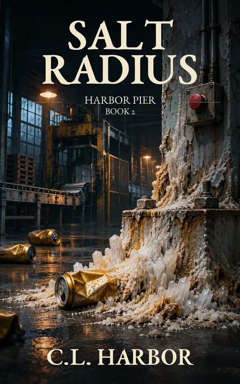

Salt Radius
Harbor Pier, A Harbor City Book: #2
The first rule of the factory is simple: Don't stop the line.
Kindle Unlimited reader? Membership eligibility for individual books is shown on Amazon. The format links above are paid affiliate links.
Purchase links open Amazon. Format availability is taken from the public catalog record.
What is on file
The first rule of the factory is simple: Don't stop the line.
Garrett Boone learns that rule on his first day.
At Harbor City's canning plant, the depalletizer feeds the filler. The filler feeds the seamer. The seamer feeds the packer. Three hundred workers depend on a machine that hasn't caused a shutdown in three years and two months.
Stop the line, and everyone hears about it.
Literally.
Read the complete filed description
The intercom announces your station.
But Garrett is good at his job. Too good, perhaps. Within days, he knows the machine's rhythm better than his own heartbeat.
Then he notices something growing at the base of its support column.
White crystals. Hard as stone. Four inches long.
Nobody knows what they are. Nobody wants to find out. And nobody is willing to stop production long enough to investigate.
The building has other secrets, too.
Dead zones where the air doesn't move. Corridors designed around machines instead of people. A trail of mineral deposits in places no supervisor ever looks.
Garrett begins to understand that the factory has been keeping a record of its own.
Not in reports.
In its walls.
And when a rush order of gold promotional cans threatens the plant's perfect production record, Garrett discovers what happens when a man is trained to fear stopping a machine more than letting it destroy everything.
Salt Radius is Book 2 of Harbor Pier, an interconnected collection of darkly funny, unsettling speculative stories about the workers who keep Harbor City's machinery running.
The line has been running for three years and two months.
The building has been keeping its own account.
And the record is written in salt.
Further material may surface.
No connected records are currently listed for this entry. Connections are added only when the archive can support them, and not merely because two stories share a city.
Request filing notices ↗